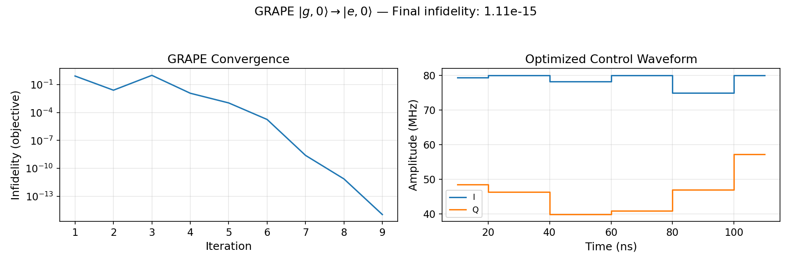

GRAPE Optimal Control Tutorial¶
This page introduces cqed_sim's model-backed GRAPE (Gradient Ascent Pulse Engineering) solver. For the full interactive walkthrough, open:
tutorials/30_advanced_protocols/06_grape_optimal_control_workflow.ipynb
Companion scripts:
examples/grape_storage_subspace_gate_demo.pyexamples/hardware_constrained_grape_demo.py
Physics Background¶
The Optimal Control Problem¶
Given a quantum system with Hamiltonian \(H(t) = H_0 + \sum_j u_j(t) H_j\), we want to find control waveforms \(\{u_j(t)\}\) that maximize a fidelity objective:
for state preparation, or
for unitary synthesis, where \(U(T) = \mathcal{T}\exp\left(-i\int_0^T H(t) dt\right)\) is the propagator.
For cQED, \(H_0\) is the full dispersive Hamiltonian (including cavity, qubit, self-Kerr, dispersive shift), and \(H_j\) are the drive coupling operators for each control line. Unlike idealized optimal control algorithms that work on abstract qubits, cqed_sim GRAPE operates on the physical Hilbert space including all cavity Fock levels and transmon levels.
The GRAPE Algorithm¶
GRAPE (Khaneja et al. 2005) uses the following key insight: for piecewise-constant controls \(u_j(t) = u_j^{(k)}\) on time steps \(k = 1, \ldots, N\), the gradient of the fidelity with respect to each control amplitude can be computed exactly:
where \(|X_k\rangle = U_k \cdots U_1 |\psi_0\rangle\) is the forward-propagated state and \(\langle P_k |\) is the backward-propagated adjoint (target overlap). Computing both forward and backward propagations takes \(O(N d^2)\) operations — the same scaling as a single forward simulation, making GRAPE highly efficient.
The update rule is gradient ascent:
In cqed_sim, the solver uses L-BFGS-B for second-order convergence with box constraints on the amplitudes.
Hardware-Aware Optimal Control¶
Real devices distort the programmed waveforms through:
- Low-pass filtering (bandwidth-limited cables and amplifiers)
- DAC quantization (finite bit depth)
- IQ amplitude saturation (mixer or amplifier limits)
- Finite rise/fall times (boundary windows)
If GRAPE ignores these effects, the optimized waveform — when applied to the actual hardware — will produce a distorted physical drive that differs from the intended one, reducing fidelity. Hardware-aware GRAPE includes the distortion model directly in the gradient computation, so the optimizer finds waveforms that produce the desired drive after filtering.
What GRAPE Does¶
GRAPE finds piecewise-constant control waveforms that steer a quantum system toward a desired objective. It:
- Propagates the system forward slice-by-slice using the piecewise-constant schedule
- Propagates the adjoint (target) backward simultaneously
- Computes the exact gradient of the objective with respect to each slice amplitude
- Iterates using L-BFGS-B until convergence
In cqed_sim, GRAPE works directly on the physical model Hamiltonian — it does not require an idealized qubit abstraction.
Minimal Example¶
Prepare \(|g,0\rangle \to |e,0\rangle\) (a qubit π-pulse) using GRAPE:
import numpy as np
from cqed_sim import (
DispersiveTransmonCavityModel, FrameSpec,
PiecewiseConstantTimeGrid, ModelControlChannelSpec,
build_control_problem_from_model, state_preparation_objective,
GrapeSolver, GrapeConfig,
)
# 1. System and frame
model = DispersiveTransmonCavityModel(
omega_c=2*np.pi*5e9, omega_q=2*np.pi*6e9,
alpha=0.0, chi=0.0, kerr=0.0, n_cav=1, n_tr=2,
)
frame = FrameSpec(omega_c_frame=model.omega_c, omega_q_frame=model.omega_q)
# 2. Control problem: 6 piecewise-constant slices × 20 ns = 120 ns total
problem = build_control_problem_from_model(
model, frame=frame,
time_grid=PiecewiseConstantTimeGrid.uniform(steps=6, dt_s=20e-9),
channel_specs=(ModelControlChannelSpec(
name="qubit", target="qubit", quadratures=("I", "Q"),
amplitude_bounds=(-8e7, 8e7), export_channel="qubit",
),),
objectives=(state_preparation_objective(
model.basis_state(0, 0), # initial: |g,0⟩
model.basis_state(1, 0), # target: |e,0⟩
),),
)
# 3. Solve
solver = GrapeSolver(GrapeConfig(maxiter=80, seed=42, random_scale=0.15))
result = solver.solve(problem)
print(f"Success: {result.success}")
print(f"Objective: {result.objective_value:.6e}")
Example Output¶
Running the example above produces a converged solution. The left panel shows the infidelity vs. iteration (semilogy scale, monotonically decreasing). The right panel shows the optimized I/Q control amplitudes as a step function:

A 120 ns π-pulse optimized by GRAPE achieves infidelity \(\lesssim 10^{-4}\) in 80 iterations. The I-channel dominates (it implements the rotation axis), while the Q-channel remains near zero for a purely real rotation.
Key Concepts¶
Time Grid and Parameterization¶
The control problem operates on a discrete time grid. Each slice has a constant control amplitude:
from cqed_sim import PiecewiseConstantTimeGrid
grid = PiecewiseConstantTimeGrid.uniform(steps=20, dt_s=5e-9) # 100 ns total
For held-sample parameterization (each parameter value is held for multiple time slices):
from cqed_sim import HeldSampleParameterization
problem = build_control_problem_from_model(
...,
parameterization_cls=HeldSampleParameterization,
parameterization_kwargs={"sample_period_s": 20e-9},
)
Objectives¶
| Objective | Description |
|---|---|
state_preparation_objective(initial, target) |
Maximize overlap of evolved state with target |
UnitaryObjective(U_target, subspace) |
Match a unitary on a logical subspace |
Hardware-Aware Mode¶
Attach a HardwareModel to optimize through realistic signal-chain effects:
from cqed_sim import HardwareModel
from cqed_sim.optimal_control.hardware import (
FirstOrderLowPassHardwareMap,
SmoothIQRadiusLimitHardwareMap,
BoundaryWindowHardwareMap,
)
problem = build_control_problem_from_model(
...,
hardware_model=HardwareModel(maps=(
FirstOrderLowPassHardwareMap(cutoff_hz=25e6, export_channels=("qubit",)),
SmoothIQRadiusLimitHardwareMap(amplitude_max=6e7, export_channels=("qubit",)),
BoundaryWindowHardwareMap(ramp_slices=1, export_channels=("qubit",)),
)),
)
See the Hardware-Aware Control tutorial for details.
Replay Through the Full Simulator¶
After optimization, verify the result against the time-domain ODE solver:
replay = result.evaluate_with_simulator(
problem, model=model, frame=frame,
compiler_dt_s=1e-9, waveform_mode="physical",
)
print(f"Replay fidelity: {replay.metrics['aggregate_fidelity']:.6f}")
The replay step integrates the actual ODE using the optimized waveform — a higher-fidelity check than the GRAPE forward propagation, since it uses the continuous-time simulator rather than piecewise-constant approximation.
Practical Considerations¶
Choosing Pulse Duration¶
There is a minimum time \(T_{\min}\) required to achieve a given gate fidelity, set by the quantum speed limit (proportional to \(1/\Omega_{\max}\) where \(\Omega_{\max}\) is the amplitude bound). For a qubit π-pulse, \(T_{\min} \approx \pi / (2 \Omega_{\max})\). Using \(T \gg T_{\min}\) gives GRAPE many degrees of freedom and typically converges faster; using \(T \approx T_{\min}\) produces minimal-time but maximally-amplitude pulses.
Dealing with Local Minima¶
GRAPE is a local optimizer. Use the seed parameter and GrapeConfig(n_random_restarts=k) to run multiple random initializations and return the best result.
Multi-Mode and Leakage Control¶
For problems involving cavity Fock levels, add a leakage penalty to the objective to suppress population outside the target subspace:
from cqed_sim.optimal_control import LeakagePenaltyObjective
problem = build_control_problem_from_model(
...,
objectives=(
state_preparation_objective(initial, target),
LeakagePenaltyObjective(weight=0.5, leakage_subspace=leaked_indices),
),
)
See Also¶
- Optimal Control API — full API reference
- Hardware & Control API —
HardwareModel,HardwareMaptypes - Hardware-Aware Control Tutorial — signal-chain modeling and GRAPE integration
- Unitary Synthesis — gate-sequence optimization alternative to GRAPE